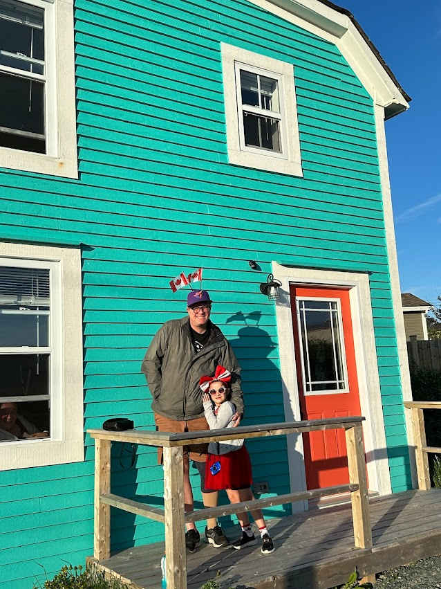
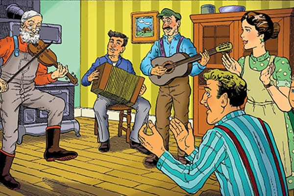
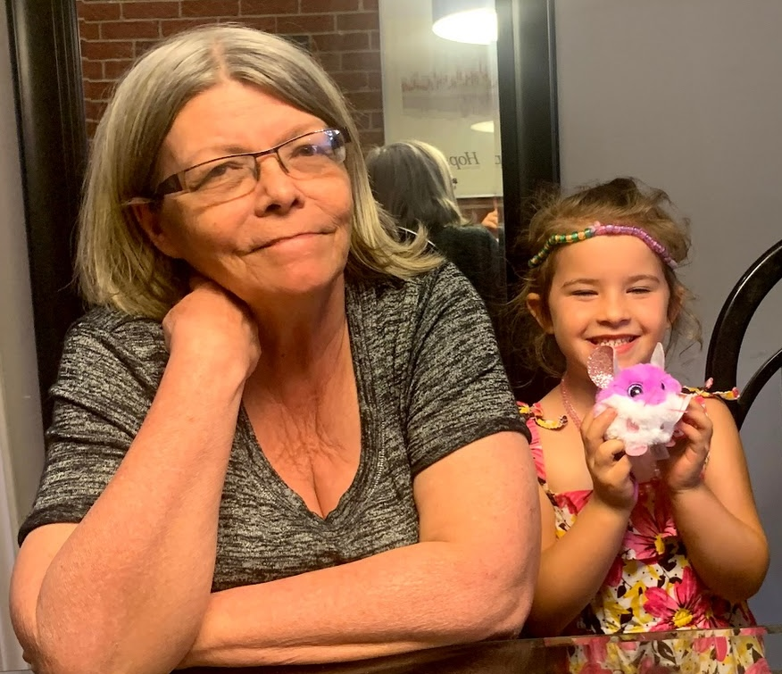
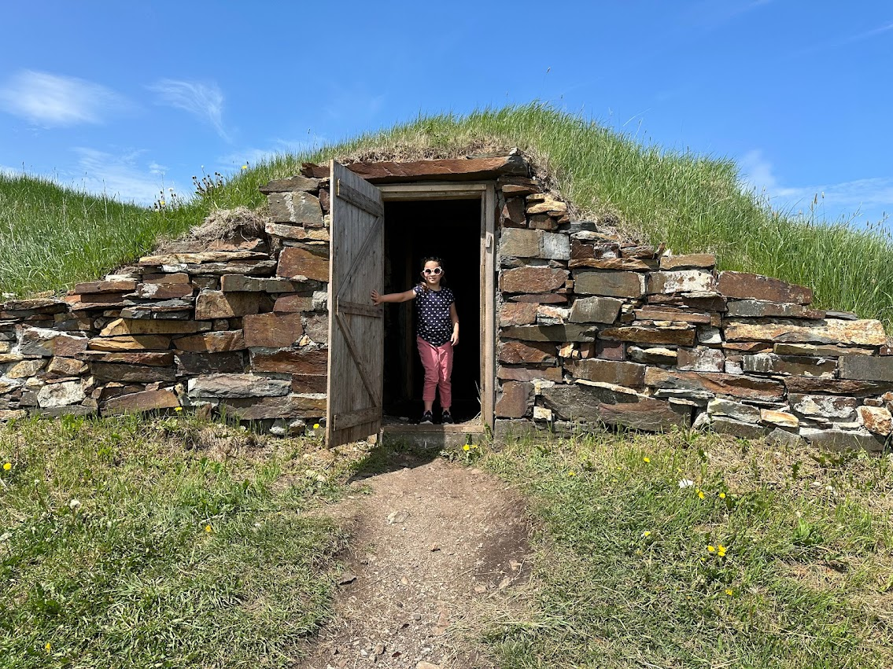
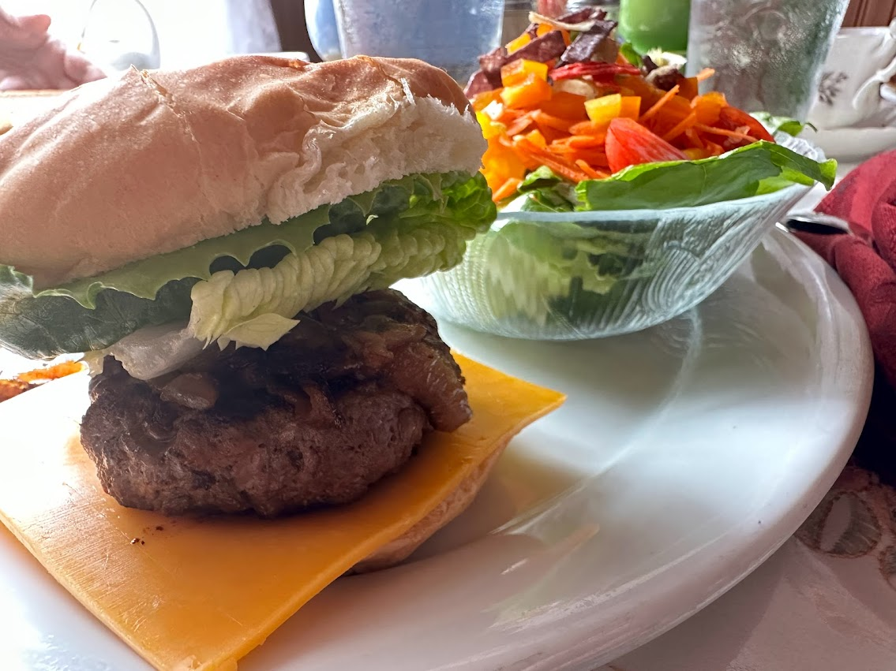

Life by the Salty Sea
"The ocean doesn't just surround us; it defines us. From the rhythm of the waves to the echo of the fiddle."

Kitchen Parties
Imagine crowding into someone’s warm kitchen on a Saturday night — fiddles playing, feet stomping, voices singing. That’s a Newfoundland kitchen party! It’s one of the most beloved traditions on the island, where music, dancing, and good company come together spontaneously in the most unlikely of venues.
Like other folk traditions, Newfoundland music first evolved as a pastime shared among friends and co-workers. Jigs and reels were played for dancing. Shanties were matched to the rhythms of hard manual labour. Ballads were stories told to pass long winter evenings.
Over the past century the music grew far beyond the kitchen. Radio, television, and bands like Great Big Sea and Buddy Wasisname and the Other Fellers brought the sound to international audiences — while Saturday night jam sessions still unfold spontaneously in kitchens and basements around the province.

The Newfoundland Flag
Designed by Christopher Pratt · Adopted June 24, 1980
The flag of Newfoundland and Labrador was designed by celebrated Newfoundland artist Christopher Pratt and first flown on June 24, 1980. Its geometric design draws inspiration from traditional Beothuk and Innu decorative pendants — honouring the Indigenous peoples who called this land home long before anyone else.
Blue
The sea, lakes, and rivers that surround and define the province
White
The snow and ice of Newfoundland and Labrador's long winters
Red
Human effort — and the two regions of the province: the island of Newfoundland and mainland Labrador
Gold
The confidence of the people in themselves and their future — the golden arrow always points forward!
Fun fact: The red triangles and gold arrow together form a trident — a nod to the province's deep connection to the sea and fishing. When the flag is displayed vertically, the gold arrow becomes a sword honouring those who served in the military.
Newfoundland Snowballs
Newfoundland Snowballs have been a tradition for decades! Like many on or from the Rock, Melinda's Nanny (grandmothers in Newfoundland are usually referred to as "Nanny", and grandfathers "Poppy") would whip up a batch of these every Christmas. Melinda's dad has decades of memories of these delicious treats!

Newfoundland Snowballs
Makes about 4 dozen · A Christmas classic from the Rock
grocery Ingredients
- 3 cups sugar
- ¾ cup melted butter
- 1¼ cups milk
- 3 cups large rolled oats
- 1 cup unsweetened fine coconut
- 12 tbsp cocoa
- 1½ cups extra coconut (for rolling)
format_list_numbered Instructions
- In a large saucepan, combine the sugar, butter, and milk. (This mixture will foam up while boiling, so a larger pot is recommended.)
- Boil gently over medium heat for 5–6 minutes, or until the mixture reaches 225–230°F on a candy thermometer. Don't start timing until the mixture is at a full rolling boil, and don't stir while it boils.
- In a separate bowl, mix together the oats, 1 cup coconut, and cocoa.
- Pour the boiled mixture into the dry ingredients and stir until well combined. Chill well in the fridge until firm enough to shape — the mixture will be very soft and sloppy while warm.
- Let it cool to almost room temperature, then cover and refrigerate overnight. The next day it will be much easier to scoop and roll.
- Roll into 1½-inch balls, then roll each ball in the extra coconut.
Storage tip: These should always be stored in the fridge to keep their soft, slightly chewy texture — they get too soft at room temperature. They freeze very well too!

Elliston's Root Cellars
Long before refrigerators, Newfoundlanders kept their food fresh the clever way — by tucking it into the earth. Root cellars are traditional storage structures built right into small hills and banks, using the ground's natural humidity to stay cool in summer and just warm enough to prevent freezing in winter.
The tiny community of Elliston, on the Bonavista Peninsula, is officially the Root Cellar Capital of the World — with over 130 documented root cellars in and around the town. Half of them are still in working condition and used today!
- Each cellar takes 3–4 weeks to build — neighbours, friends, and family all pitch in together
- Many families share a cellar, making it a true community effort
- Elliston also has the closest land-based puffin viewing site in North America — just a 5-minute walk!
- Every September, the town hosts Roots, Rants and Roars — a food festival with a 5 km hike and stops to taste dishes made by award-winning chefs
Moose Burgers!
Move over cows, there's a new burger in town. Moose makes the perfect wild game burger that lets the flavour of the meat shine through.
